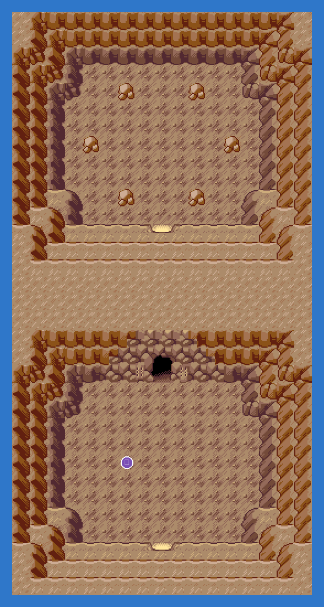
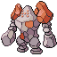

PokémonEMMA'S EMERALD
OFFICIAL Strategy Guide
Desert Ruins
TIP
No wild Pokémon in the grass here. Time of day: M = morning (6–10), D = day (10–19), E = evening (19–20), N = night (20–6).
Event 1: Regirock

In the desert on Route 111. In the puzzle room step right twice, down twice, then use Strength on the wall. Regirock is Rock: Water, Grass, Fighting, Ground or Steel moves.

Event 2: Zygarde (Champion)
After the Hall of Fame, Zygarde coils in the same ruins. Level 70 Dragon/Ground; Ice moves hit it four times over.
Legendary Pokémon here
Zygarde (50)
LV70
DragonGround
from Champion
Static encounters: walk up and press A. Caught = gone for good; beaten or fled = back next visit.
4